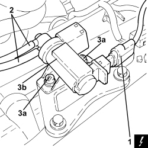

1064B42 SOLENOID CONTROLLING TURBOCHARGER VANE POSITION ACTUATOR - R.R
- Path
- Procedures > 10 ENGINE > 1064 ENGINE SUPERCHARGING SYSTEM > 1064B CONTROL/SAFETY DEVICES > 1064B42 SOLENOID CONTROLLING TURBOCHARGER VANE POSITION ACTUATOR - R.R
- Kind
- repair procedure (removal / refitting; the operation number is the code)
- Applies to
- engines: 1.9 JTD 8V, 1.9 JTD 16V, 2.4 JTD 20V; all production periods
- Interactive page
- https://sloeber94.github.io/elrnDB/#/939010582
Applies to: engines: 1.9 JTD 8V, 1.9 JTD 16V, 2.4 JTD 20V; all production periods
 Removing
Removing
 Refitting
Refitting- Make sure that the ignition key is in the OFF position, then disconnect the battery terminal (-).
Description | Connector | |
|---|---|---|
- | Battery |
1. Disconnect the electrical connection from the turbocharger vane actuator solenoid valve.
Description | Connector | |
|---|---|---|
1 | Turbine variable geometry control solenoid |
2. Disconnect the vacuum pipes from the turbocharger vane position actuator control solenoid valve.
3. Unscrew nuts (3a) and remove the turbocharger vane position actuator control solenoid valve (3b).

Applies to: engines: 1.9 JTD 8V, 1.9 JTD 16V, 2.4 JTD 20V; all production periods
Refitting
Removing- Refit the turbocharger vane position actuator control solenoid valve and secure with nuts.
- Connect the vacuum pipes to the turbocharger vane position actuator control solenoid valve.
- Connect the electrical connection to the turbocharger vane actuator solenoid valve.
- Connect the negative battery terminal.
Topics linked from this page (2)
Topics that link to this page (10)
- D005 ENGINE DOES NOT PRODUCE BEST PERFORMANCE
- 1048OA AIR INTAKE/VACUUM CIRCUIT CHECK
- 1060GL CHECK OPERATION OF MAIN ENGINE CONTROL UNIT RELAY
- 1064BB CHECK ON OPERATION OF SUPERCHARGING PRESSURE SOLENOID VALVE (PIERBURG)
- E5050 DIESEL ENGINE ELECTRONIC MANAGEMENT WIRING DIAGRAM
- E5050 DIESEL ENGINE ELECTRONIC MANAGEMENT COMPONENT LOCATION
- E5050 DIESEL ENGINE ELECTRONIC MANAGEMENT WIRING DIAGRAM
- E5050 DIESEL ENGINE ELECTRONIC MANAGEMENT COMPONENT LOCATION
- E5050 DIESEL ENGINE ELECTRONIC MANAGEMENT WIRING DIAGRAM
- E5050 DIESEL ENGINE ELECTRONIC MANAGEMENT COMPONENT LOCATION